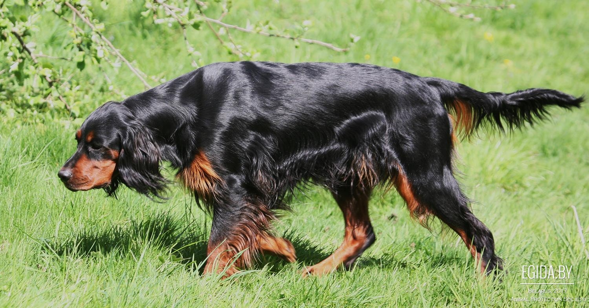
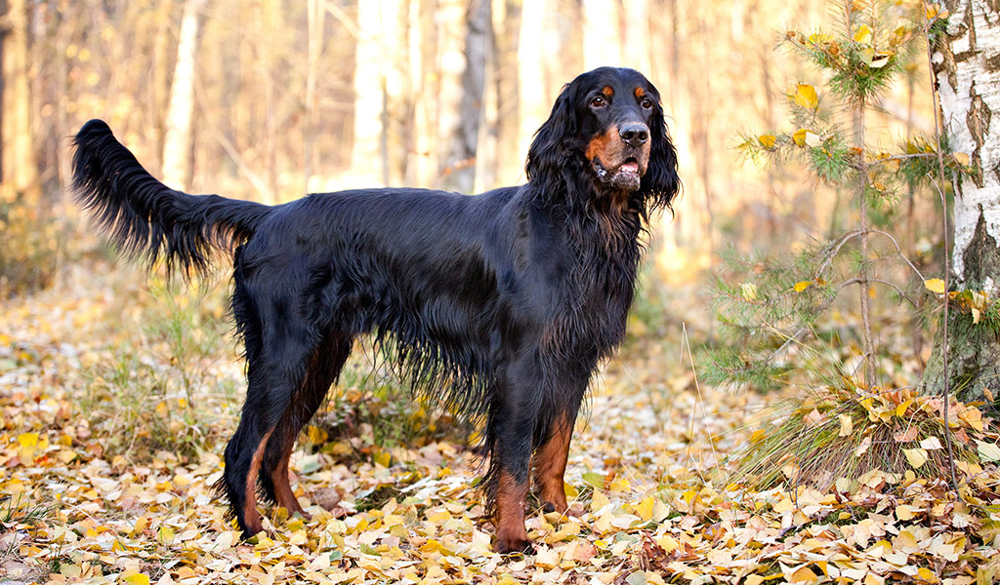
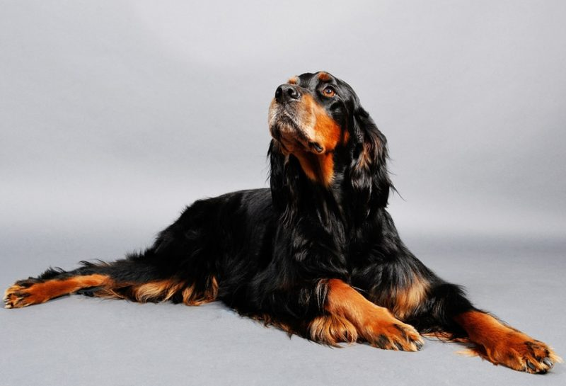
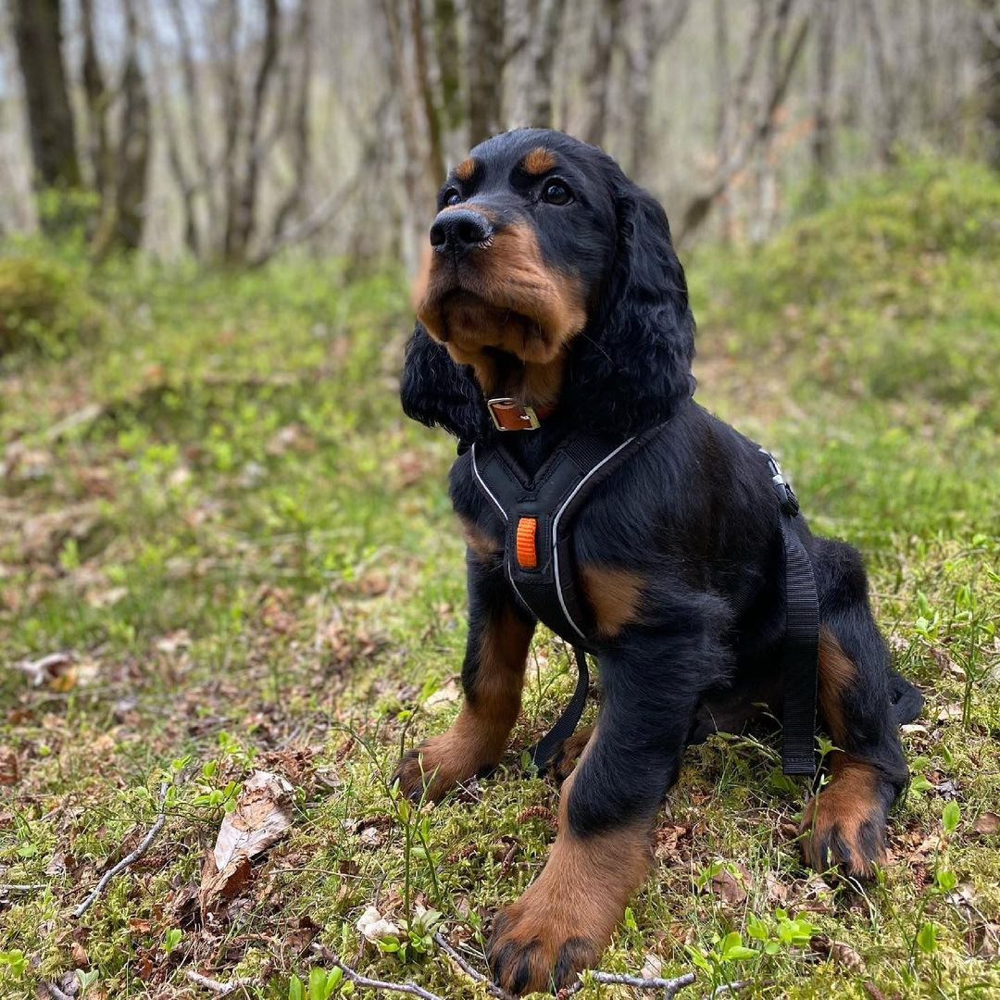
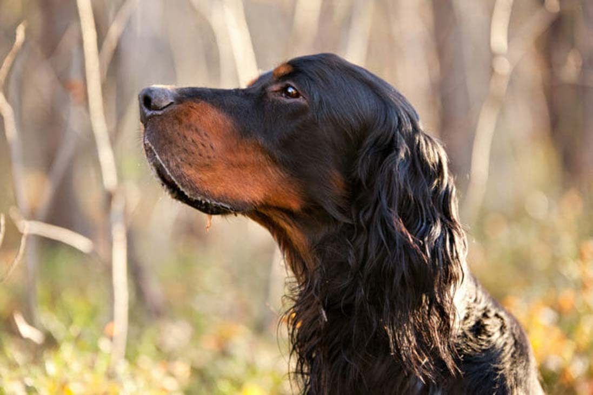

Шотландский сеттер
Шотландский сеттер — это большая собака с широкой грудной клеткой и мускулистыми лапами. Он производит впечатление элегантной и достойной собаки, в которой также сочетается сила и выносливость настоящего охотника. Шерсть — шелковистая и прямая, чёрного окраса с подпалом. На лапах, груди, животе, ушах и хвосте — очёсы. Рост взрослых самцов — 66 см, вес — 29,5 кг, взрослых самок — 62 см и 25,5 кг соответственно.
Происхождение
Историю породы "шотландский сеттер" можно проследить с 1620 года, когда она была известна как «чёрно-красновато-жёлтый сеттер». Она обязана своим происхождением испанским легавым и различным ранним версиям спаниелей. Порода получила своё имя благодаря герцогу Гордону IV, который захотел официально создать породу в своём замке в Банффшире в Шотландии в 1827 году. Шотландский сеттер — это единственная истинно шотландская легавая, и она была специально выведена для охоты на птиц, особенно куропаток. Они отличаются большей выносливостью по сравнению с другими охотничьими породами. Такие собаки отлично охотятся на заболоченной местности. Они приносят хозяину больше дичи, чем другие легавые, хотя им может потребоваться для этого больше времени.
Характер
Собака станет великолепным компаньоном, если получит достаточно физических упражнений. В противном случае собака может стать гиперактивной.
Здоровье
Как и многие другие породы, шотландские сеттеры могут страдать от различных наследственных глазных заболеваний и дисплазии тазобедренного сустава (патология, которая может привести к проблемам с мобильностью). Поэтому важное значение имеет оценка состояния глаз и бедер собаки до разведения.
Физические нагрузки

Эту породу специально выводили как сильную и выносливую собаку. У нее репутация самой крепкой и самой длинной рабочей легавой собаки. В результате, если содержать собаку как питомца, требуется обеспечить для нее большие физические нагрузки. Это важно для поддержания здоровья и счастья питомца. Для взрослой собаки требуется более двух часов занятий в день. Рекомендуется привлечь собаку к какой-то деятельности, где питомец сможет найти применение своему охотничьему инстинкту, например, тренировка взятия следа и полевые испытания.
Питание
Крупным породам собак с большим аппетитом требуется иное сочетание питательных веществ, в том числе минералов и витаминов, по сравнению с собаками меньшего размера. Сеттер-гордоны склонны к метеоризму и проблемам с желудком. Для снижения риска таких проблем рекомендуется более частое и дробное питание.
Уход за шерстью
Шотландский сеттер ― это собака с полудлинной шерстью, которую следует прочёсывать щёткой и гребнем не реже двух раз в неделю. Длинные, свисающие уши также необходимо регулярно очищать, иначе могут развиться инфекции.